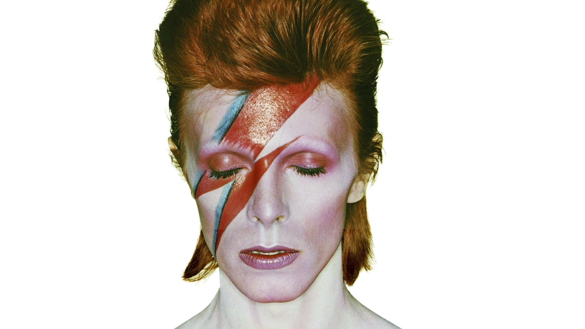
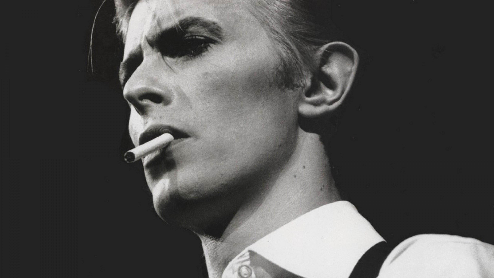

David Bowie Biografia

Introdução
David Bowie, nome artístico de David Robert Jones, (Londres, 8 de janeiro de 1947 — Nova Iorque, 10 de janeiro de 2016) foi um cantor, compositor, ator e produtor musical britânico. Por vezes referido como "camaleão do Rock" pela capacidade de sempre renovar sua imagem, tem sido uma importante figura na música popular há cinco décadas e é considerado um dos músicos populares mais inovadores e ainda influentes de todos os tempos, sobretudo por seu trabalho nas décadas de 1970 e 1980, além de ser distinguido por um vocal característico e pela profundidade intelectual de sua obra.
Embora desde cedo tenha realizado o álbum David Bowie e diversas canções, Bowie só chamou a atenção do público em 1969, quando a canção "Space Oddity" alcançou o quinto lugar no UK Singles Chart. Após um período de três anos de experimentação, que incluem a realização de dois significativos e influentes álbuns, The Man Who Sold the World (1970) e Hunky Dory (1971), ele retorna em 1972 durante a era glam rock com um alter ego extravagante e andrógino chamado Ziggy Stardust, sustentado pelo sucesso de "Starman" e do aclamado álbum The Rise and Fall of Ziggy Stardust and the Spiders from Mars. Seu impacto na época foi um dos maiores cultos já criados na cultura popular. Em 1973, o disco Aladdin Sane levou Ziggy aos EUA. A vida curta da persona revelaria apenas uma das muitas facetas de uma carreira marcada pela reinvenção contínua, pela inovação musical e pela apresentação visual.
Em 1974, o álbum Diamond Dogs previa, com seu som e sua temática caótica, a revolução punk que surgiria anos depois. Em 1975, Bowie finalmente conseguiu seu primeiro grande sucesso em território americano com a canção "Fame", em co-autoria com John Lennon, do álbum Young Americans. O som constitui uma mudança radical no estilo que, inicialmente, alienou muitos de seus devotos no Reino Unido. Nessa etapa, a carreira musical de Bowie se renovou e seguiu novos rumos. Após a criação de uma nova persona, Thin White Duke, apresentada no aclamado Station to Station (1976), que traz características de alguém supostamente interessado em misticismo, Cabala e Nazismo, ele confundiu as expectativas de seu público americano e de sua gravadora com a produção do minimalista Low (1977) — a primeira das três colaborações com Brian Eno durante os próximos dois anos. A chamada "Trilogia de Berlim" (com "Heroes" e Lodger) trouxe álbuns introspectivos que lograram o topo nas paradas britânicas e que ganharam admiração crítica duradoura.
Seguindo o sucesso comercial irregular no final dos anos 70, a canção "Ashes to Ashes" do álbum de 1980 Scary Monsters (and Super Creeps) alcançou o primeiro lugar no Reino Unido e lançou bases para um novo movimento chamado New Romanticism. No ano seguinte, junto à banda Queen, escreveu e cantou a canção "Under Pressure" e em seguida atingiu novo pico comercial com o álbum Let's Dance (1983), que rendeu sucessos com a canção homônima e o fez cativar nova audiência. Ao longo dos anos 1990 e 2000, Bowie continuou a experimentar novos estilos musicais, incluindo os gêneros industrial, drum and bass, e adult contemporary. Seu último álbum de inéditas foi por muito tempo Reality, uma mistura de melancolia e humor, suportado pela A Reality Tour de 2003–2004. Após um período de quase dez anos em hiato, divulga The Next Day em 2013 e recebe boas avaliações da crítica e público. Após comemorar cinquenta anos de carreira com a coletânea Nothing Has Changed em 2014, o cantor produziu seu último trabalho ainda vivo, o álbum Blackstar (2016).

A influência de David Bowie é única, musical e socialmente. Como escreveu o biógrafo David Buckley, "ele penetrou e modificou mais vidas do que qualquer outra figura comparável".[1] De fato, grande é sua influência no mundo da música entre artistas e bandas mais antigas e a nova geração (Ver Influência), e, além de ter auxiliado movimentos como a libertação gay e a recriação de uma nova juventude independente, introduziu novos modos de se vestir na cena musical e tem uma carreira prestigiada no cinema. Em 2002, ficou em 29º lugar na lista popular 100 Greatest Britons e já vendeu mais de 136 milhões de álbuns ao longo de sua carreira. Foi premiado no Reino Unido com 9 certificações de álbum de platina, 11 de ouro e 8 de prata, e, nos Estados Unidos, 5 de platina e 7 de ouro. Em 2004, a Rolling Stone colocou-o na 39ª posição em sua lista dos "100 Maiores Artistas do Rock de Todos os Tempos" e em 23º lugar na lista dos "Melhores Cantores de Todos os Tempos".